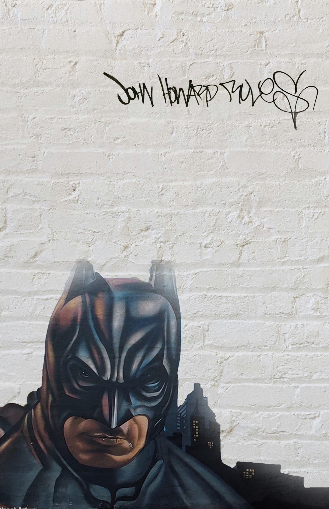

1970s–1980s
Painting Against Restriction
Pioneers including John Howard paint during the dictatorship. A Batman image names Beco do Batman, an alley artists turn into a changing outdoor gallery.

São Paulo’s murals and pichação make its walls a record of identity, inequality, and public expression.
Pioneers including John Howard paint during the dictatorship. A Batman image names Beco do Batman, an alley artists turn into a changing outdoor gallery.
The Clean City Law restricts outdoor advertising, changing the visual landscape and opening new space for artistic visibility.
Eduardo Kobra honors Ayrton Senna and Apolo Torres addresses barriers to education. In 2019, the city launches its Street Art Museum initiative.
Criola’s A Ancestral do Futuro honors Carolina Maria de Jesus, and Vhils carves a mural celebrating Brazilian diversity.
Street art makes community stories visible within São Paulo’s monumental architecture. Its changing, and sometimes erased, murals reveal an ongoing struggle over memory, representation, and urban space.